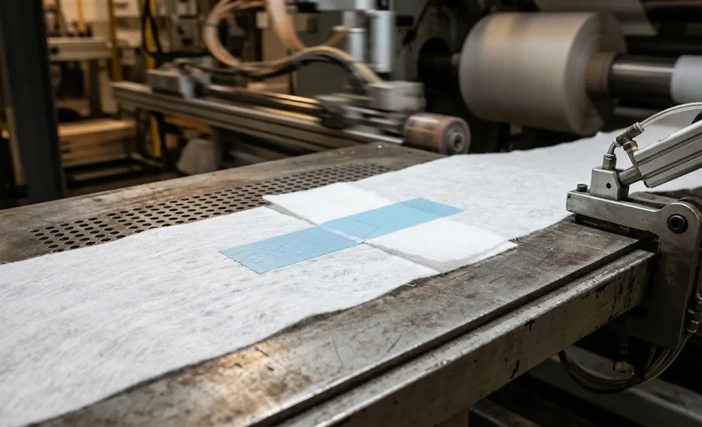

Published November 13, 2026 | By HDPTH Technical Editorial Team
Non-stop unwinding is sold on a simple promise: the line keeps running while an expiring roll is replaced by a fresh one. The hardware behind that promise — the splice table, the accelerating turret or flying splice carriage, the timing controls — is specified in detail. What almost never appears in the buying process is a number for the one thing that matters: how often the splice actually works. A machine can carry the finest zero-speed splicing unit available and still stop three times a shift because tabs are placed inconsistently or timing is set for a different material. Splice success rate turns that hidden variable into a measurable, contractible KPI, and writing it into the specification costs nothing at quotation stage.
What the splice success rate KPI actually measures
The formula is simple — successful splices divided by total splice attempts over a defined period — but the definition of success is not, and this is where buyers lose protection. A splice can hold through the unwind yet break at the slitting section because the lap was too thick; it can pass mechanically but leave a lump that becomes a length or hardness fault in the finished roll; it can succeed only after a second attempt that nobody recorded. Each definition produces a different number from the same events. Before negotiating any figure, the buyer should decide which of these counts as a failure for their product: complete loss of web continuity, any event that requires operator intervention, or any splice-related defect found in the finished roll. The strictest definition is usually the right one for hygiene and medical nonwovens, where a single lapped splice can reject a whole parent roll downstream.
Two distinctions sharpen the KPI further. First, separate automatic splices from operator-initiated ones — the machine’s capability is measured by the first, the operation’s discipline by the second. Second, report the rate per material and per shift rather than only as a monthly average, because a 99% average can hide a configuration that fails one material in four. A KPI that cannot be sliced by material, shift and cause is a headline, not a management tool.
What failed splices cost a converting operation
A failed splice is rarely just a splice. The immediate event is a web break or an emergency deceleration, and the cost cascades from there. The partly wound rolls on the rewind must be finished, labelled as containing a splice and either downgraded or reprocessed; the expiring roll is often scrapped with metres of good material still on it; the line restarts at threading speed while the schedule falls behind. On a hygiene products line feeding diaper or sanitary napkin production, one unscheduled stop can idle a downstream line for tens of minutes, which is why converters track unwinder-caused stoppages as aggressively as machine availability itself.
The slower costs are harder to see. Operators who do not trust the splice unit start rejecting automatic splicing and slowing down manually, quietly giving back the productivity the feature was bought for. Chronic splice failures also push quality problems downstream, because lapped or broken sections get discovered at inspection or, worse, at the customer. When these costs are written down, splice success rate stops looking like a statistics exercise and starts looking like what it is: an availability KPI for the unwind station with a direct line to overall equipment effectiveness.
The splice KPIs worth writing into a specification
Splice performance is best specified as a small family of metrics rather than one number. The headline KPI is the success rate itself, with an agreed floor — well-configured non-stop unwind stations on modern machinery routinely sustain 99% or better once parameters are dialled in for the material, so a contractual floor of at least 98 of the last 100 splices is realistic rather than optimistic. Around it sit supporting figures that make the headline honest: the maximum splice acceleration time from zero to production speed, because a splice that succeeds but takes twice the specified acceleration time is still a throughput loss; the splice-induced waste length, measured as the metres of web consumed or rejected per splice event; and the finished-roll acceptance rule, which states whether a roll containing a splice ships, downgrades or is re-wound.
Buyers should also require that the KPI definition travel with the number. A one-line clause — success means web continuity through the full machine with no operator intervention and no splice-related defect in the finished roll, counted per material and reported per shift — removes most of the arguments that surface later. Vendors who measure their own machines this way will accept the clause readily; hesitation at this point is itself useful information.
How vendors demonstrate splice performance in the FAT
A splice guarantee is only as good as the demonstration behind it, and demonstrations vary enormously in quality. The weak version is a handful of splices, hand-prepared by the supplier’s own technician, using the supplier’s tape, at a comfortable speed. The version that protects the buyer runs at least 20 to 30 splice cycles at production speed with the buyer’s own material, prepared by operators trained the way the plant will train them, using the tape specification the plant will actually buy — and every attempt is recorded, successful or not. The FAT protocol should list the splice parameters used for the demonstration so they can be reproduced on site, and the recorded success rate at FAT becomes the baseline the site crew measures against after installation.
One further demonstration is worth requesting: a deliberate failure. Forcing a bad splice in a controlled test shows how the machine detects the failure, how quickly it decelerates, what the operator sees on the HMI and how recovery works. A buyer who has watched both a good splice and a failed one under controlled conditions can judge splicing quality on the floor for years afterwards, which matters more than any figure in the offer.

Logging splice data automatically instead of on paper
On a PLC-controlled line, every splice is already a sequence of discrete events, which makes it straightforward to time-stamp and classify each cycle: splice initiated, accelerating splice completed, splice detected as failed, line stoppage following splice. With those counters in the control system, the success rate becomes a continuously reported figure rather than an argument between shifts. The data should leave the machine through the same connectivity used for everything else — OPC UA interfaces and MES or SCADA integration both handle splice events as ordinary production records — so the KPI appears on the same shift report as output and downtime instead of living in a paper log at the unwind station.
The classification matters as much as the counting. A log that records only totals cannot tell a buyer whether the problem is tab placement, tape quality or timing; a log that captures the failure mode of every rejected splice — plus the material, roll diameter, operator and shift — turns the KPI into a diagnosis tool. This is the same data discipline that drives the rest of a data-driven converting operation, and splice events are among the easiest events to instrument.
Diagnosing the causes behind a falling success rate
When the success rate drops, the splice unit itself is usually the last suspect. The dominant causes sit upstream of the mechanism: inconsistent tab placement or length, the wrong splicing tape for the material, expired or badly stored adhesive, splice timing that no longer matches the current roll diameter, tension mismatch between the expiring and new rolls, dirty or worn splice table surfaces, and preparation steps skipped under time pressure. A structured failure log quickly shows which of these dominates on a given line, and most fixes cost a fraction of what a shift of stoppages costs — retraining on tab preparation, a tape change, a timing update written into the recipe for that material.
The practical diagnostic loop is short: capture every failure with its mode, group the events by cause, correct the dominant one, and confirm the recovery in the following week’s figures. Lines that run this loop as routine hold their success rates above 99% for years; lines that treat each failure as an isolated incident spend the same week every quarter rediscovering the same cause.
Writing splice KPIs into the machine contract
Three clauses convert this article into contractual protection. First, a KPI definition clause: splice success rate as defined above, reported per material and per shift, with the agreed floor. Second, a demonstration clause: the FAT includes a splice programme of at least 20 to 30 cycles at production speed with the buyer’s material, all attempts recorded, parameters documented for reproduction, plus a controlled failure demonstration. Third, a data clause: the control system time-stamps and classifies every splice cycle and exposes the events through the machine’s data interfaces. The clauses are short, they cost the supplier little if the machine is genuinely capable, and they give the buyer a number to hold long after the machine has been paid for.
Related guides deepen this topic: our Slitter Rewinder Zero-Speed Splicing: Buyer’s Guide explains the splicing technology these KPIs measure, and the Slitter Rewinder Splice Table: Buyer’s Guide covers the hardware variables behind most splice failures. To see non-stop unwinding engineered with testable acceptance in mind, review the HDPTH high-speed slitting machines range.
Need a Splice Acceptance Programme for Your Next Line?
Send HDPTH your material, roll weights and speed targets. Our application engineers will propose the splicing configuration, the KPI definitions and the FAT splice demonstration we would build into the machine — documented before the order is placed.
Submit Your Project InquiryFrequently asked questions
What is a good splice success rate for a slitter rewinder?
Well-configured non-stop unwinding stations on modern slitter rewinders typically achieve splice success rates of 99 percent or higher once splicing parameters are dialled in for the material. Rather than committing to a single universal number, buyers should define success for their own product, agree the measurement method with the supplier, and specify a floor such as at least 98 of the last 100 splices successful, verified with real production material and the actual splice preparation workflow.
How is splice success rate measured on a slitter rewinder?
The basic formula is successful splices divided by total splice attempts over a defined period, multiplied by 100. The difficult part is the definition of success: a splice that holds through the unwind but breaks at the slitting section, a splice that passes but creates a length or thickness fault in the finished roll, and a splice that required a second attempt all count differently depending on how the KPI is written. The specification should state whether success means web continuity through the machine, acceptability of the finished roll, or both, and who judges borderline cases.
How many splices should a factory acceptance test demonstration include?
A meaningful FAT demonstration runs at least 20 to 30 splice cycles at production speed with the buyer’s own material, prepared the way operators will prepare it in the plant, and records every attempt. A demonstration with a handful of hand-prepared splices by the supplier’s technician proves little. The protocol should also include at least one deliberate failure so the buyer can see how the machine detects a failed splice, decelerates and recovers.
Can splice success rate be logged automatically?
Yes. On a PLC-controlled line, each splice cycle can be time-stamped and classified automatically: splice initiated, accelerated splice completed, splice detected as failed, line stoppage following splice. The counts feed shift reports and dashboards through the same OPC UA or MES interfaces used for other production data, so the success rate becomes a continuously reported KPI instead of a figure reconstructed from operator logs and roll labels.
What are the most common causes of splice failures?
The usual causes are upstream rather than the splice unit itself: inconsistent splice tab placement or length, wrong splicing tape for the material or an expired adhesive, expired or poorly stored double-sided tape, incorrect splice timing relative to roll diameter, tension mismatch between the expiring and new rolls, dirty or worn splice table surfaces, and skipped preparation steps when operators work under time pressure. A structured log that records the failure mode of each rejected splice quickly shows which cause dominates.